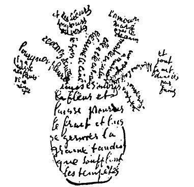

Un bouquet en voix libre
J’ai cueilli les mots comme on cueille les fleurs —
un souffle, un parfum,
et dans la lumière du matin,
je les laisse s’envoler.
Un lys, pour le silence doré de l’aube.
Un coquelicot, pour le frisson du cœur.
Une violette timide
chante doucement sous les feuilles.
J’ajoute un brin de marguerite,
comme un espoir qui se devine.
Des roses — mes préférées —
s’ouvrent lentement dans mes paumes.
Que ce bouquet
jette ses rimes au vent,
libres,
comme une musique qu’on regarde
avec l’âme grande ouverte.
Djamel Metref
At Yenni le 2 août 2025

← Tous les poèmes